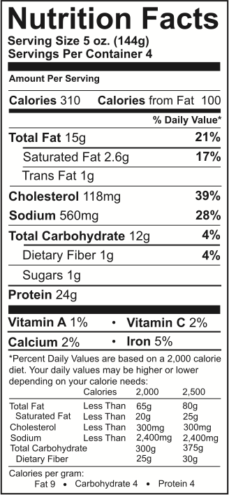

الملصقات التعريفية للطعام
توفر الملصقات التعريفية للطعام معلومات قيمة لتناول طعام صحي. لا تقلق، يمكن أن تصبح جميع الحقائق والمعلومات سهلة الفهم من خلال النصائح التالية:

- قارن بين حجم حصة المكون على الملصق التعريفي وحجم حصة وجبتك المخطط لها لمعرفة عدد الوجبات التي تحتاجها.
- تحقق من عدد حصص المكونات في الحاوية بأكملها.
- تحقق من العناصر الغذائية في حصة المكون سواء كانت عالية أو منخفضة من خلال النظر إلى النسبة المئوية على الملصق التعريفي. وكلما ارتفعت النسبة المئوية، كلما زاد هذا المكون في الطعام.
- يعد الجزء الأكثر أهمية في الملصق التعريفي هو كمية الكربوهيدرات في حصة واحدة من طعام معين. عادة ما تحتوي خطط الوجبات على 3 أو 4 حصص وجبات معينة للنساء، و 4 أو 5 حصص وجبات معينة للرجال.
توضع قائمة المكونات تحت ملصق الحقائق الغذائية أو بجانبه. تُسجَل المكونات بالترتيب حسب الكمية، من المقدار الأكبر إلى الأصغر. يجب على الأشخاص الذين يعانون من حساسية الطعام أن يهتموا دائمًا بقائمة المكونات!